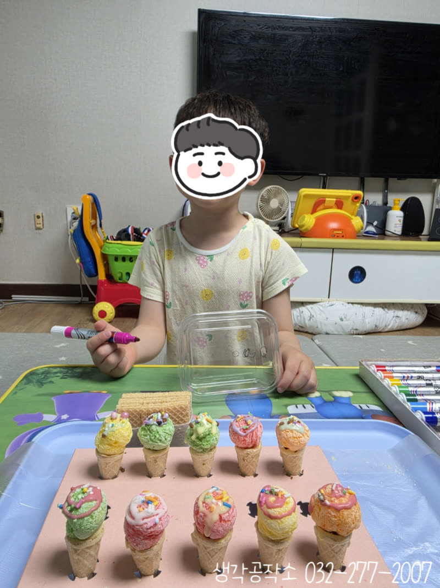
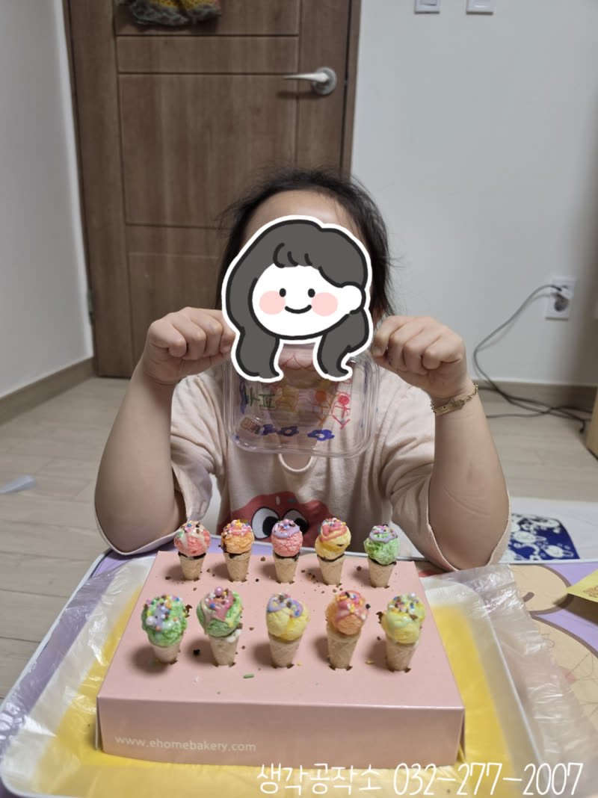
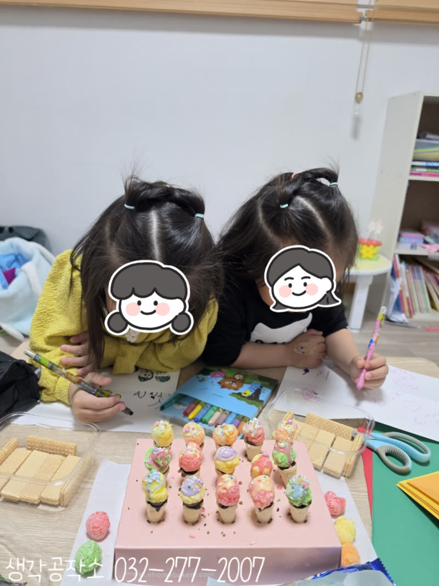
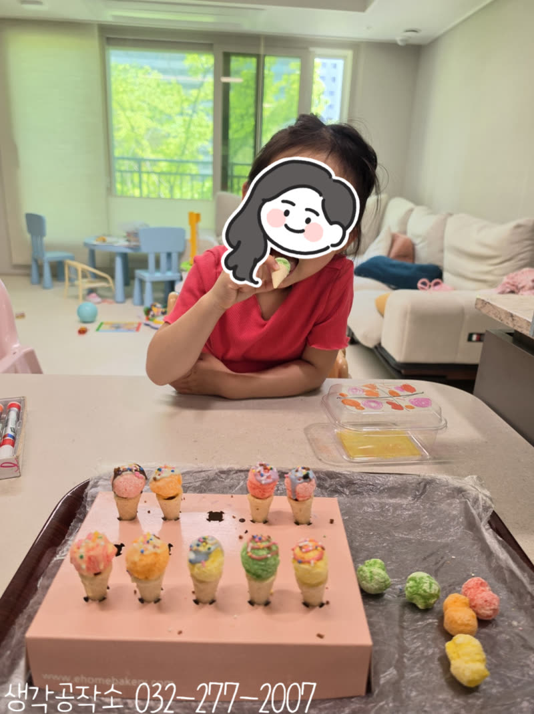
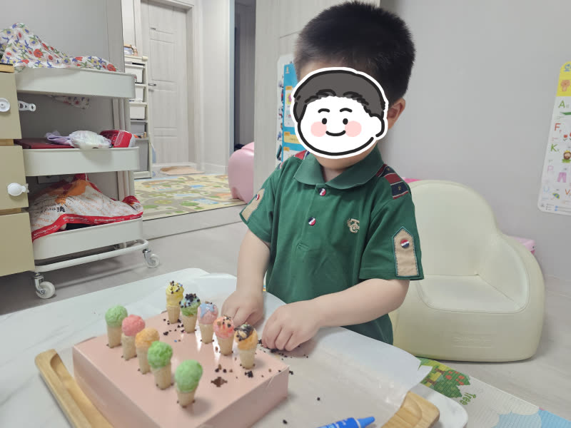
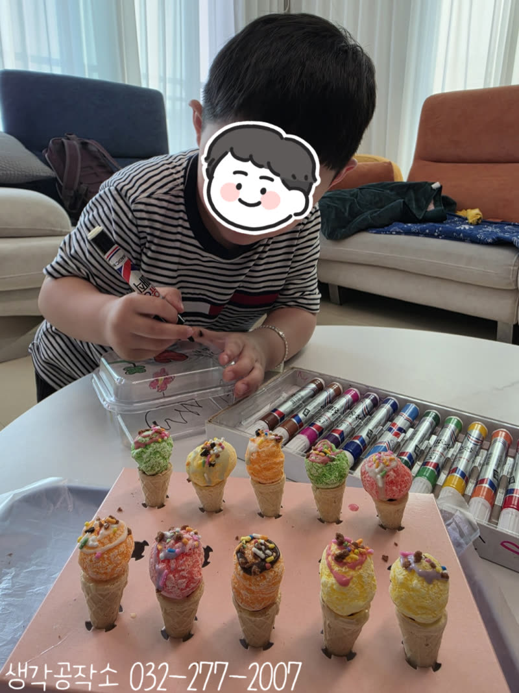
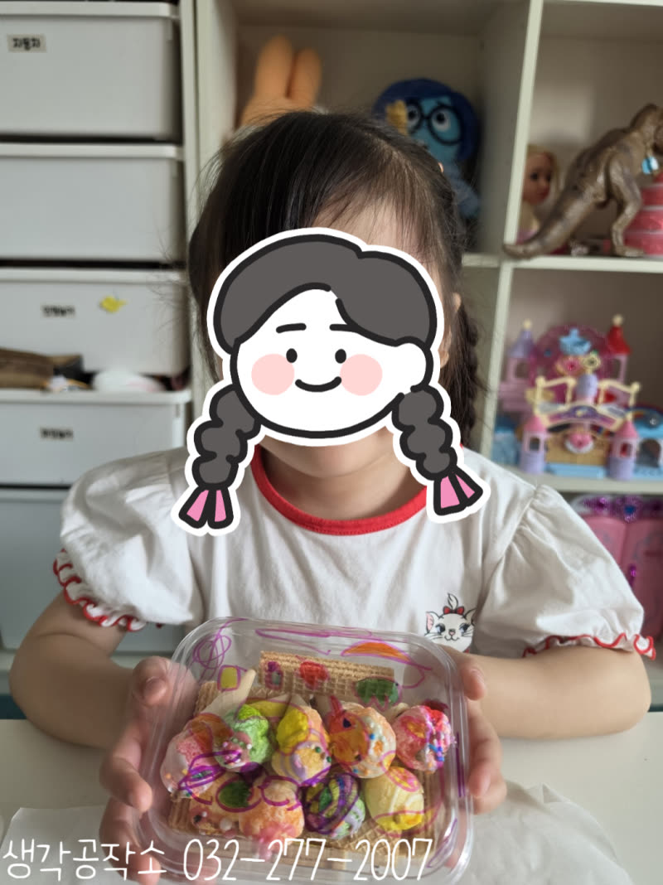
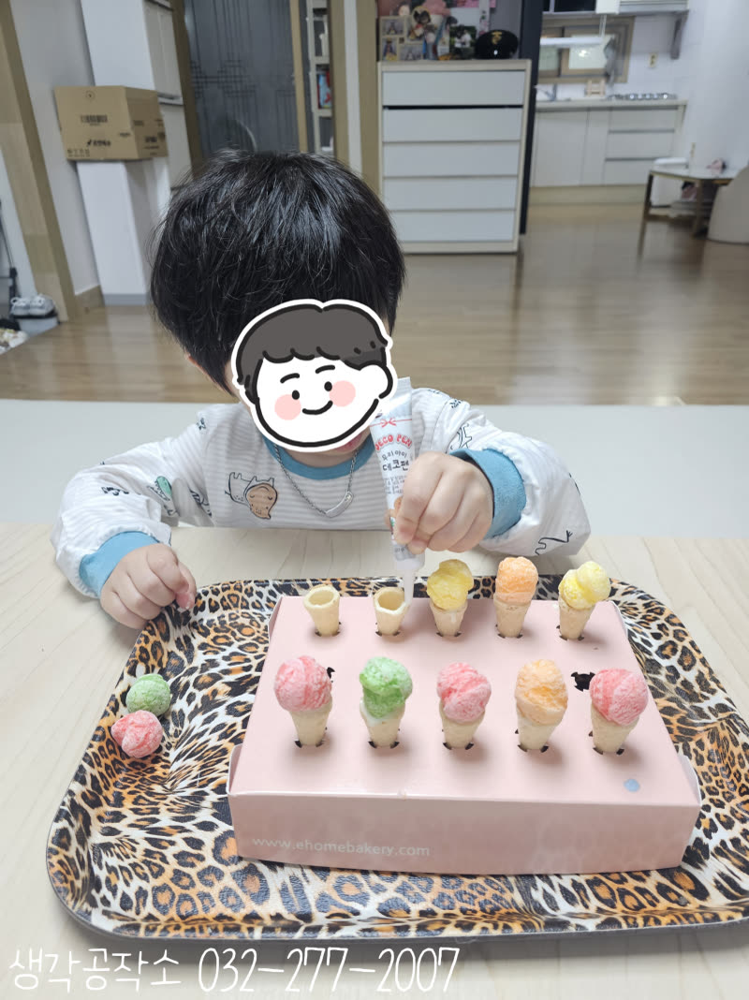
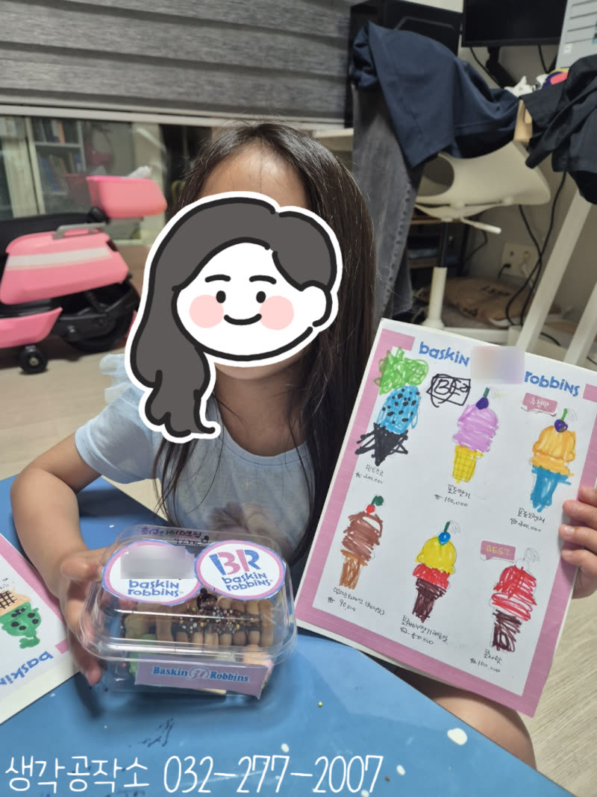
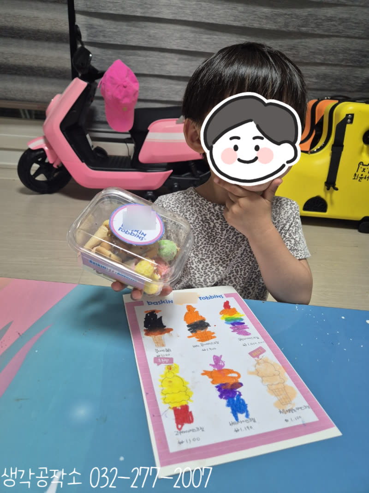

내가 만든 달콤한 아이스크림 가게! 미니 아이스크림 만들기 🍦✨
안녕하세요, 생각공작소입니다. :)
5월, 햇살이 따사롭게 내리쬐는 계절
길을 걷다 아이스크림 가게 앞에서
발걸음이 멈추는 계절이 왔습니다. 🍦
이번엔 직접 만들어봤어요.
바로 미니 아이스크림 만들기!
아이스크림 콘에 동그란 과자를 올리고
초코펜으로 장식한 뒤,
케이스에 담아 선물 포장까지
한 편의 달콤한 베이커리가
아이들 손끝에서 완성되었답니다. 🎁✨



먼저 뜨거운 물에 초코펜을 담가두었어요.
초코가 녹기를 기다리는 동안
아이스크림을 세울 수 있는 종이를 접고
구멍에 콘을 하나씩 끼워 세웠습니다.🍫
"아이스크림 집이 생겼어요!"
"저는 맨 앞줄에 세울 거예요!"
가지런히 줄 세워진 콘들을 보며
벌써부터 신이 난 아이들. 🍦☺️
콘 안에 초코 쿠키를 채워 넣고
녹인 초코펜을 콘 입구에 살살 발라주자
접착제처럼 끈적끈적해졌어요.
"초코가 붙여주는 거예요?"
"맞아! 이제 과자 올려봐!"
동그란 과자를 조심스럽게 올리는 순간.
아이스크림 스쿱이 탄생했습니다. 🍧


"흔들리면 어떡해요?"
"조심조심~ 붙을 때까지 잠깐 잡고 있어봐!"
숨을 멈추고 집중하는 아이들
과자가 단단히 붙는 걸 확인하는 순간
작은 탄성이 터졌어요. ✨
2층 아이스크림을 만든 아이도 있었어요!
부숴진 과자에 초코펜을 바르고
또 하나를 올려 2단 완성!
"저는 2층 아이스크림 만들 거예요!"
"저도요, 저도 2층!"
저마다의 아이스크림이
하나씩 완성되어 갔습니다. 🌈

이제 장식할 차례!✨
콘 위에 초코펜을 흘려 뿌리고
알록달록 스프링클을 솔솔 뿌리자
"우와, 진짜 아이스크림 가게 같아요!"
"저는 초코 더 많이 뿌릴 거예요!"
색색의 스프링클이 콘 위에 내려앉으며
세상에서 가장 예쁜 아이스크림이
완성됐답니다. 🎨


아이스크림이 굳는 동안
티라미수 케이스를 아크릴펜으로 꾸미기!
"저는 이름 쓸 거예요!"
"저는 아이스크림 그림 그릴게요!"
"아이스트리 가게입니다 써야지!"
케이스 위에 메뉴판을 만든 아이도 있었고
예쁜 그림을 가득 채운 아이도 있었어요. 🖊️


굳은 아이스크림을
케이스 안에 하나씩 담고
뚜껑을 닫은 후
도일리 페이퍼를 붙이고
빨간 끈으로 리본을 만들어 마무리!
"진짜 선물 같아요!"
"엄마한테 줄 거예요!"
"아니, 제가 먹을 거예요!"
그 사이 터져 나온 웃음소리 😂
완성된 아이스크림 케이스를 들고
활짝 웃는 아이들 :)
직접 만든 아이스크림은
세상 어느 가게에서도
살 수 없는 것이었답니다. 💕
이번 미니 아이스크림 만들기 활동은
단순한 요리를 넘어,
정교하게 장식하며 소근육을 발달시키고,
굳히기를 기다리며 인내심을 기르고,
달콤한 향기와 다양한 질감으로 오감을 깨우고,
포장까지 직접 완성하며 성취감을 느끼는
모든 순간이
아이들의 성장이었답니다. 🌱
생각공작소는 아이들이
아이들이 맛있는 것을 직접 만들고
그 기쁨을 마음껏 누릴 수 있도록
언제나 함께하겠습니다. 🙌
아이들의 가정에서
제공인력 선생님과 1:1로 진행하며,
아이들의 오감을 자극하고
창의력과 집중력을 자연스럽게 키우는
맞춤형 프로그램입니다.
단순히 만들기를 가르치는 것을 넘어,
아이들이 스스로 탐색하고 표현하며
성장할 수 있도록 세심하게 이끌어갑니다.
오감 쑥쑥! 생각 쑥쑥!
📞 생각공작소 032-277-2007